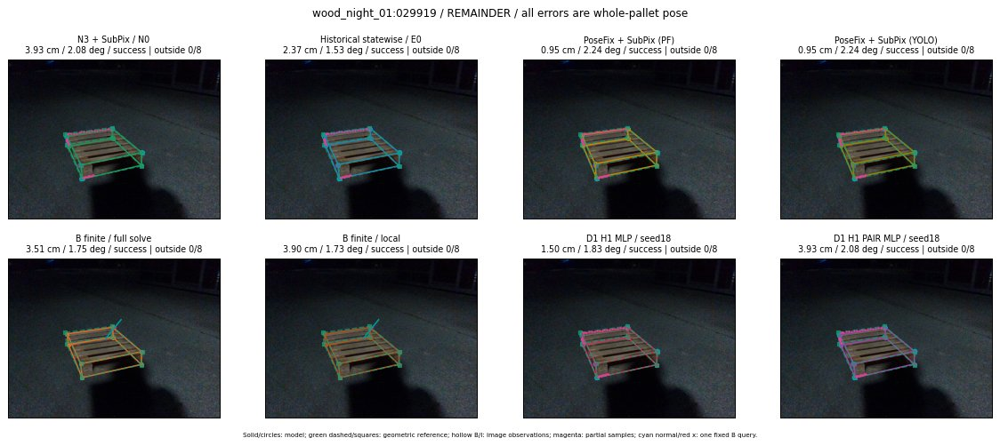

Whole-pallet pose errors; reference is a fixed geometric annotation, not certified physical GT.

Scores are uncalibrated logits. N0 retention is a numerical pose alias; it differs from H0 none or B fallback. B/I and profiles in baseline/B panels are original observations; L panels use new D1 observations. Only one deterministic supported B query is shown in a thumbnail; full support counts are below. Grey privacy rectangles edit the display copy only and are unrelated to O states; all observations were measured on original pixels. Thumbnails use JPEG quality85; detailed scientific panels are PNG.
| Method | Whole pose / cm, deg | Actual source | Selected ID | Score | Archived candidates | Eligible | N0 retained | H0 none | Fallback | Finite profiles |
|---|---|---|---|---|---|---|---|---|---|---|
| Raw YOLO + F | 1.36 cm / 0.96 deg / success | OTHER | None | N/A | N/A | N/A | False | N/A | None | N/A |
| N3 + SubPix / N0 | 3.93 cm / 2.08 deg / success | N0 | None | N/A | N/A | N/A | True | N/A | None | N/A |
| Historical statewise / E0 | 2.37 cm / 1.53 deg / success | E0_REGENERATED | None | N/A | N/A | N/A | False | N/A | False | N/A |
| PoseFix raw | 1.03 cm / 1.16 deg / success | OTHER | None | N/A | N/A | N/A | False | N/A | None | N/A |
| PoseFix + SubPix (PF) | 0.95 cm / 2.24 deg / success | OTHER | None | N/A | N/A | N/A | False | N/A | False | historical support records 9; finite audit N/A |
| PoseFix + SubPix (YOLO) | 0.95 cm / 2.24 deg / success | OTHER | None | N/A | N/A | N/A | False | N/A | False | historical support records 9; finite audit N/A |
| Historical L, seed18 | 3.93 cm / 2.08 deg / success | N0 | N0 | N/A | 65 | 65 | True | True | True | N/A |
| Historical B fixed bank | 3.51 cm / 1.75 deg / success | OTHER | G10/ORIGINAL_WD/sample/2 | N/A | N/A | N/A | False | N/A | False | N/A |
| Historical B full | 2.74 cm / 0.98 deg / success | OTHER | NEW/B/ORIGINAL_WD/h2/G10/SWAPPED_WD/sample/5/PROPOSED_NATIVE_YAW_2 | N/A | N/A | N/A | False | N/A | False | N/A |
| Historical edge full | 8.77 cm / 16.60 deg / failure | OTHER | NEW/edge/ORIGINAL_WD/h0/G13/ORIGINAL_WD/sample/0/PROPOSED_NATIVE_YAW_0 | N/A | N/A | N/A | False | N/A | False | N/A |
| Historical AB full | 2.83 cm / 1.03 deg / success | OTHER | NEW/AB/ORIGINAL_WD/h0/G13/ORIGINAL_WD/sample/0/PROPOSED_NATIVE_YAW_0 | N/A | N/A | N/A | False | N/A | False | N/A |
| B finite / fixed bank | 3.51 cm / 1.75 deg / success | OTHER | G10/ORIGINAL_WD/sample/2 | N/A | N/A | N/A | False | N/A | False | 34/34 |
| B finite / full solve | 3.51 cm / 1.75 deg / success | OTHER | G10/ORIGINAL_WD/sample/2 | N/A | N/A | N/A | False | N/A | False | 34/34 |
| B finite / local | 3.90 cm / 1.73 deg / success | OTHER | NEW_FINITE/B/ORIGINAL_WD/h0/N0_LOCAL_SAME_PHYSICAL_POSE/ORIGINAL_WD | N/A | N/A | N/A | False | N/A | False | 34/34 |
| Edge finite / full solve | 1.50 cm / 1.83 deg / success | OTHER | G10/ORIGINAL_WD/sample/1 | N/A | N/A | N/A | False | N/A | False | 34/34 |
| D0 H0 MLP / seed18 | 3.93 cm / 2.08 deg / success | N0 | N0 | 3.71736741065979 | 29 | 29 | True | True | True | N/A |
| D0 H0 MLP / seed19 | 3.93 cm / 2.08 deg / success | N0 | N0 | 4.439018249511719 | 29 | 29 | True | True | True | N/A |
| D0 H0 MLP / seed20 | 3.93 cm / 2.08 deg / success | N0 | N0 | 1.8819096088409424 | 29 | 29 | True | True | True | N/A |
| D0 H1 MLP / seed18 | 2.48 cm / 1.71 deg / success | OTHER | G10/ORIGINAL_WD/selected | -0.43363845348358154 | 29 | 29 | False | False | False | N/A |
| D0 H1 MLP / seed19 | 2.48 cm / 1.71 deg / success | OTHER | G10/ORIGINAL_WD/selected | -0.8883702158927917 | 29 | 29 | False | False | False | N/A |
| D0 H1 MLP / seed20 | 2.48 cm / 1.71 deg / success | OTHER | G10/ORIGINAL_WD/selected | -1.4070470333099365 | 29 | 29 | False | False | False | N/A |
| D1 H0 MLP / seed18 | 3.93 cm / 2.08 deg / success | N0 | N0 | 8.575448036193848 | 29 | 29 | True | True | True | N/A |
| D1 H0 MLP / seed19 | 3.93 cm / 2.08 deg / success | N0 | N0 | 8.287717819213867 | 29 | 29 | True | True | True | N/A |
| D1 H0 MLP / seed20 | 3.93 cm / 2.08 deg / success | N0 | N0 | 7.810410976409912 | 29 | 29 | True | True | True | N/A |
| D1 H1 MLP / seed18 | 1.50 cm / 1.83 deg / success | OTHER | WD0/ORIGINAL_WD/selected | -0.14503340423107147 | 29 | 29 | False | False | False | N/A |
| D1 H1 MLP / seed19 | 2.48 cm / 1.71 deg / success | OTHER | G10/ORIGINAL_WD/selected | -0.2720259726047516 | 29 | 29 | False | False | False | N/A |
| D1 H1 MLP / seed20 | 3.93 cm / 2.08 deg / success | N0 | N0 | -0.770095944404602 | 29 | 29 | True | False | False | N/A |
| D1 H1 ROLE AFFINE / seed18 | 2.48 cm / 1.71 deg / success | OTHER | G10/ORIGINAL_WD/selected | -0.09355060756206512 | 29 | 29 | False | False | False | N/A |
| D1 H1 ROLE AFFINE / seed19 | 3.93 cm / 2.08 deg / success | N0 | N0 | -0.4547589123249054 | 29 | 29 | True | False | False | N/A |
| D1 H1 ROLE AFFINE / seed20 | 2.48 cm / 1.71 deg / success | OTHER | G10/ORIGINAL_WD/selected | -0.08143183588981628 | 29 | 29 | False | False | False | N/A |
| D1 H1 PAIR MLP / seed18 | 3.93 cm / 2.08 deg / success | N0 | N0 | -1.1786125898361206 | 29 | 2 | True | False | False | N/A |
| D1 H1 PAIR MLP / seed19 | 3.93 cm / 2.08 deg / success | N0 | N0 | -0.9820922017097473 | 29 | 2 | True | False | False | N/A |
| D1 H1 PAIR MLP / seed20 | 3.93 cm / 2.08 deg / success | N0 | N0 | -0.5041214227676392 | 29 | 2 | True | False | False | N/A |
| D1 H1 PAIR ROLE AFFINE / seed18 | 3.93 cm / 2.08 deg / success | N0 | N0 | -0.7286781668663025 | 29 | 2 | True | False | False | N/A |
| D1 H1 PAIR ROLE AFFINE / seed19 | 3.93 cm / 2.08 deg / success | N0 | N0 | -0.7407113313674927 | 29 | 2 | True | False | False | N/A |
| D1 H1 PAIR ROLE AFFINE / seed20 | 3.93 cm / 2.08 deg / success | N0 | N0 | -0.5485420227050781 | 29 | 2 | True | False | False | N/A |
| Regenerated common E0 | 2.37 cm / 1.53 deg / success | E0_REGENERATED | E0_REGENERATED | N/A | N/A | N/A | False | N/A | False | N/A |